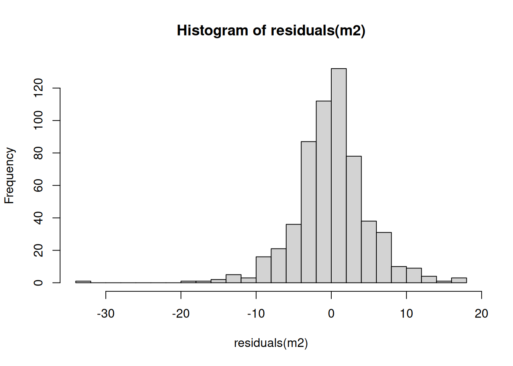

Lab 8 Linear model: Simple linear regression
8.1 Welcome
In the previous lab we learned about correlation. We visualised the relationship of different types of variables. Also, we computed one correlation measure for two numeric variables, Pearson correlation. This measure is useful to compute the strength and the direction of the association. However, it presents some limitations, e.g. it can only be used for numeric variables, it allows only one variable at a time, and it is appropriate to describe a linear relationship.
Linear regression can overcome some of these limitations and it can be extended to achieve further purposes (e.g. use multiple variables or estimate scenarios). This technique is in fact very common and one of the most popular in quantitative research in social sciences. Therefore, getting familiar with it will be important for you not only to perform your own analyses, but also to interpret and critically read literature.
8.2 Introduction to simple linear regression
IMPORTANT: Linear regression is appropriate only when the dependent variable is numeric (interval/ratio).
However, the independent variables can be categorical, ordinal, or numeric. Also, you can include more than one independent variable to evaluate how these relate to the dependent variable. In this lab we will start using only one explanatory variable. This is know as simple linear regression.
8.2.1 The idea behind
For this lab, we will continue using the 2012 NILT survey to introduce linear models. To do so, please set your RStudio environment as follows:
- Go to your ‘Quants lab group’ in RStudio Cloud;
- Create a copy of the project called ‘NILT2’ which is located in your ‘Quants lab group’ by clicking on the ‘Start’ button;
- Once in the project, create a new ‘R Script’ file (a simple
Rscript NOT an .Rmd file); - Save the
Rfile as ‘linear_model_intro’.
Reproduce the code below, by copying, pasting and running it from your new script and focus on the intuitive part of this section.
First, load the tidyverse library and read the nilt_r_object.rds file which is stored in the folder called ‘data’ and contains the NILT survey (tidyverse was installed in your session already).
## Load the packages
library(tidyverse)
# Read the data from the .rds file
nilt <- readRDS("data/nilt_r_object.rds")This dataset is exactly the same as the one you processed in previous labs.
We will re-revisit the example of the respondent’s spouse/partner characteristics. To keep things simple, let’s create a minimal sample of the dataset including only 40 random observations:
# select a small random sample
set.seed(3)
# Filter where partner's age is not NA and take a random sample of 40
nilt_sample <- filter(nilt, !is.na(spage)) %>% sample_n(40)
# Select only respondent's age and spouse/partner's age
nilt_sample <- select(nilt_sample, rage, spage)We will start by creating a scatter plot using the respondent’s spouse/partner age spage on the Y axis, and the respondent’s rage on the X axis.
# plot
ggplot(nilt_sample, aes(x = rage, y = spage)) +
geom_point(position = "jitter") +
labs(title = "Respondent's age vs respondent’s spouse/partner age",
x = "Respondent's age", y = "Respondent’s spouse/partner age" )As you can see, even with this minimal example using 40 observations, there is a clear trend. From the plot, it seems intuitive to draw a line that describes this general trend. Imagine a friend will draw this line for you. You will have to tell them some basic references on how to do it. You can, for example, specify a start point and and end point in the plot. Alternatively, which is what we will do below, you can specify a start point and a value that describes the slope of the line. For now, our friend is ggplot. You have to pass these two values (start point and slope) in the geom_abline() function to draw a line which describes these points.
ggplot(nilt_sample, aes(x = rage, y = spage)) +
geom_point() +
geom_abline(slope = 1, intercept = 0, colour = "red") +
labs(title = "Respondent's age vs respondent’s spouse/partner age",
x = "Respondent's age", y = "Respondent’s spouse/partner age" )In the guess above, it is assumed that the age of the spouse/partner might be exactly the same as the respondent. To draw a line like this, we used 0 as the starting value in the geom_abline() function. In statistics, this is known as the intercept and it is often represented with a Greek letter and a zero sub-index as \(\beta_0\) (beta-naught) or with \(\alpha\) (alpha). The location of the intercept can be found along the vertical axis (in this case it is not visible). The second value we passed to describe the line is the slope, which uses the X axis as the reference. The slope value is multiplied by the value of the X axis. Therefore, a slope of 0 is completely horizontal. In this example, a slope of 1 produces a line at 45º. The slope is often represented with the Greek letter beta and a sequential numeric sub-index like this: \(\beta_1\) (beta-one).
We will create some points in the data frame based on these two values, the start point and the steepness factor or, formally speaking, the intercept and the slope respectively. We will store the results in a column called line1 and print the head of this data set.
# create values for the guess line 1
nilt_sample <- nilt_sample %>%
mutate(line1 = 0 + rage * 1)
# print results
head(nilt_sample)## # A tibble: 6 × 3
## rage spage line1
## <dbl> <dbl+lbl> <dbl>
## 1 40 39 40
## 2 54 51 54
## 3 66 59 66
## 4 60 71 60
## 5 35 34 35
## 6 67 57 67From the above, you can notice that the respondent’s age rage and the column that we just created line1, are identical…So, that is our guess for now. The partner’s age is the same as the respondent’s.
Is the line we just drew good enough to represent the general trend in the relationship above? To answer this question, we can measure the distance of each point of the plot to the line 1, as shown by the dashed segment in the plot below.
ggplot(nilt_sample, aes(x = rage, y = spage)) +
geom_point() +
geom_abline(slope = 1, intercept = 0, colour = "red") +
geom_segment(aes(xend = rage, yend = line1), linetype = "dashed") +
labs(title = "Respondent's age vs respondent’s spouse/partner age",
x = "Respondent's age", y = "Respondent’s spouse/partner age" )
This distance difference is known as the residual or the error and it is often expressed with the Greek letter \(\epsilon\) (epsilon). Numerically, we can calculate this by computing the difference between the known value (the observed) and the guessed number. Formally, the guessed number is called the expected value (also known as predicted/estimated value). Normally, the expected values in statistics are represented by putting a hat like this \(\hat{}\) on the letters. Since the independent variable is usually located on the Y axis, the expected value is differentiated from the observed values by putting the hat on the Y like this: \(\hat{y}\) (y-hat).
Let’s estimate the residuals for each of the observations by subtracting \(\hat{y}_i\) from \(y_i\) (spage - line1) and store it in a column called residuals. Print the head of the data set after.
# estimate residuals
nilt_sample <- nilt_sample %>%
mutate(residuals = spage - line1)
# print first 6 values
head(nilt_sample)## # A tibble: 6 × 4
## rage spage line1 residuals
## <dbl> <dbl+lbl> <dbl> <dbl>
## 1 40 39 40 -1
## 2 54 51 54 -3
## 3 66 59 66 -7
## 4 60 71 60 11
## 5 35 34 35 -1
## 6 67 57 67 -10Coming back to the question, is my line good enough? We could sum all these residuals as an overall measure to know how good my line is. From the previous plot, we see that some of the expected ages exceed the actual values and others are below. This produces negative and positive residuals. If we simply sum them, they would compensate each other and this would not tell us much about the overall magnitude of the difference. To overcome this, we can multiply the differences by themselves (to make all numbers positive) and then sum them all together. This is known as the sum of squared residuals (SSR) and we can use this as the criterion to measure how good my line is with respect to the overall trend of the points.
For line 1, we can easily calculate the SSR as follows:
sum((nilt_sample$residuals) ^ 2)## [1] 1325The sum of squared residuals for line 1 is 1,325.
We can try different lines to find the combination of intercept and slope that produces the smallest error (SSR). To our luck, we can find the best values using a well established technique called Ordinary Least Squares (OLS). This technique finds the optimal solution by the principle of maxima and minima. We do not need to know the details for now. The important thing is that this procedure guarantees to find a line that produces the smallest possible error (SSR).
In R, it is very simple to fit a linear model and we do not need to go through each of the steps above manually nor to memorise all the steps. To do this, simply use the function lm(), save the result in an object called m1 and print it.
m1 <- lm(spage ~ rage, nilt_sample)
m1##
## Call:
## lm(formula = spage ~ rage, data = nilt_sample)
##
## Coefficients:
## (Intercept) rage
## 6.299 0.875So, this is the optimal intercept \(\beta_0\) and slope \(\beta_1\) that produces the least sum of the square. Let’s see what the SSR is compared to my arbitrary guess above:
sum(residuals(m1) ^ 2)## [1] 1175.209Yes, this is better than before (because the value is smaller)!
Let’s plot the line we guessed and the optimal line together:
ggplot(nilt_sample, aes(x = rage, y = spage)) +
geom_point() +
geom_abline(slope = 1, intercept = 0, colour = "red") +
geom_smooth(method = "lm", se = FALSE) +
labs(title = "Respondent's age vs respondent’s spouse/partner age",
x = "Respondent's age", y = "Respondent’s spouse/partner age" )The blue is the optimal solution, whereas the red was just an arbitrary guess. We can see that the optimal is more balanced than the red in relation to the observed data points.
8.2.2 Formal specification
Now you are ready for the the formal specification of the linear model. After the introduction above, it is easy to take the pieces apart. In essence, the simple linear model is telling us that the dependent value \(y\) is defined by a line that intersects the vertical axis at \(\beta_0\), plus the multiplication of the slope \(\beta_1\) by the value of \(x_1\), plus some residual \(\epsilon\). The second part of the equation is just telling us that the residuals are normally distributed (that is when a histogram of the residuals follows a bell-shaped curve).
\[ \begin{align} y = \beta_0 + \beta_1 * x_1 + \epsilon, && \epsilon ~ N(0, \sigma) \end{align} \]
You do not need to memorize this equation, but being familiar to this type of notation will help you to expand your skills in quantitative research.
8.3 Fitting linear regression in R
8.3.1 R syntax
We already fitted our first linear model using the lm() above, which of course stands for linear model, but we did not discuss the specifications needed in this function. The first argument takes the dependent variable, then, we use tilde ~ to express that this is followed by the independent variable. Then, we specify the data set separated by a comma, as shown below (this is just a conceptual example, it does not actually run!):
lm(dependent_variable ~ independent_variable, data)8.3.2 Running a simple linear regression
Now, let’s try with the full data set. First, we will fit a linear model using the same variables as the example above but including all the observations (remember that before we were working only with a small random sample). The first argument is the respondent’s spouse/partner age spage, followed by the respondent’s age rage. Let’s assign the model to an object called m2 and print it after.
m2 <- lm(spage ~ rage, nilt)
m2##
## Call:
## lm(formula = spage ~ rage, data = nilt)
##
## Coefficients:
## (Intercept) rage
## 3.7039 0.9287The output first displays the formula employed to estimate the model. Then, it show us the estimated values for the intercept and the slope for the age of the respondent, these estimated values are called coefficients. In this model, the coefficients differ from the ones in the example above (m1). This is because we now have more information to fit this line. Despite the difference, we see that the relationship is still in the same direction (positive). In fact, the value of the slope \(\beta_1\) did not change much if you look at it carefully (0.87 vs 0.92).
8.3.3 Interpreting results
But what are the slope and intercept telling us? The first thing to note is that the slope is positive, which means that the relationship between the respondent age and their partner are in the same direction. When the age of the respondent goes up, the age of their partner is expected to go up as well.
In our model, the intercept does not have a meaningful interpretation on its own, it would not be logical to say that when the respondent’s age is 0 their partner would be expected to be 3.70 years old. Interpretations should be made only within the range of the values used to fit the model (the youngest age in this data set is 18). The slope can be interpreted as following: For every year older the respondent is, the partner’s age is expected to change by 0.92. In other words, the respondents are expected to have a partner who is 0.92 times years older than themselves. This means that their partners are expected to be slightly younger.
In this case, the units of the dependent variable are the same as the independent (age vs age) which make it easy to interpret. In reality, there might be more factors that potentially affect how people select their partners (e.g. genders, education, race/ethnicity, etc.). For now, we are keeping things simple using only these two variables.
Let’s practice with another example. What if we are interested in income? We can use personal income persinc2 as the dependent variable and the number of hours worked a week rhourswk as the independent variable. We’ll assign the result to an object called m3.
m3 <- lm(persinc2 ~ rhourswk, data = nilt)
m3##
## Call:
## lm(formula = persinc2 ~ rhourswk, data = nilt)
##
## Coefficients:
## (Intercept) rhourswk
## 5170.4 463.2This time, the coefficients look quite different. The results are telling us that for every additional hour worked a week a respondent is expected to earn £463.2 more a year than other respondent. Note that the input units are not the same in the interpretation. The dependent variable is in pounds earned a year and the independent is in hours worked a week. Does this mean that someone who works 0 hours a week is expected to earn £5170.4 a year (given the fitted model \(\hat{persinc2} = 5170.4 + 0*463.2\)) or that someone who works 110 hours a week (impossible!) is expected to earn £56K a year? We should only make reasonable interpretations of the coefficients within the range analysed.
Finally, an important thing to know when interpreting linear models using cross sectional data (data collected in a single time point only) is: correlation does not imply causation. Variables are often correlated with other non-observed variables which may cause the effects observed on the independent variable in reality. This is why we cannot always be sure that X is causing the observed changes on Y.
8.4 Model evaluation
In the next section, we suggest you to focus on the interpretation of the results of the linear model. You do not need to reproduce the code.
8.4.1 Model summary
So far, we have talked about the basics of the linear model. If we print a summary of the model, we can obtain more information to evaluate it.
summary(m2)##
## Call:
## lm(formula = spage ~ rage, data = nilt)
##
## Residuals:
## Min 1Q Median 3Q Max
## -33.211 -2.494 0.075 2.505 17.578
##
## Coefficients:
## Estimate Std. Error t value Pr(>|t|)
## (Intercept) 3.70389 0.66566 5.564 4e-08 ***
## rage 0.92869 0.01283 72.386 <2e-16 ***
## ---
## Signif. codes: 0 '***' 0.001 '**' 0.01 '*' 0.05 '.' 0.1 ' ' 1
##
## Residual standard error: 4.898 on 589 degrees of freedom
## (613 observations deleted due to missingness)
## Multiple R-squared: 0.8989, Adjusted R-squared: 0.8988
## F-statistic: 5240 on 1 and 589 DF, p-value: < 2.2e-16There are a lot of numbers from the result. Let’s break down the information into different pieces: first the call, second the residuals, third the coefficients, and fourth the goodness-of-fit measures, as shown below:

Model summary
The first part, Call, is simply printing the variables that were used to produce the models.
The second part, the Residuals, provides a small summary of the residuals by quartile, including minimum and maximum residual values. Remember the second part of the formal specification of the model? Well, this is where we can see in practice the distribution of the residuals. If we look at the first and third quartile, we can see that that 50% of the predicted values by the model are \(\pm\) 2.5 years old away form the observed partner’s age…not that bad.
The third part is about the coefficients. This time, the summary provides more information about the intercept and the slope than just the estimated coefficients as before. Usually, we focus on the independent variables in this section, rage in our case. The second column, standard error, tell us how large the error of the slope is, which is small for our variable. The third and fourth columns provide measures about the statistical significance of the relationship between the dependent and independent variable. The most commonly reported is the p-value (the fourth column). When these values contains many digits, R reports the result in scientific notation. In our result the p-value is <2e-16 (the real equivalent number is <0.0000000000000002, if you want to know more about scientific notation click here). As a general agreed principle, if the p-value is equal or less than 0.05 (\(p\) ≤ 0.05), we can reject the null hypothesis, and say that the relationship between the dependent variable and the independent is significant. In our case, the p-value is far lower than 0.05. So, we can say that the relationship between the respondent’s spouse/partner age and the respondent’s age is significant. In fact, R includes codes for each coefficient to help us to identify the significance. In our result, we got three stars/asterisks. This is because the value is less than 0.001. R assigns two stars if the p-value is less than 0.01, and one star if it is lower than 0.05.
In the fourth area, we have various goodness-of-fit measures. Overall, these measures tell us how well the model represents our data. For now, let’s focus on the adjusted r-squared and the sample size. The r-squared is a value that goes from 0 to 1. 0 means that model is not explaining any of the variance, whereas 1 would mean a perfect model. In social sciences we do not see high values often. The adjusted r-squared can be understood as the percentage variance that the model is able to explain. In the example above, the model explains 89.88% percent of the total variance. This is a good fit, but this is because we are modelling a quite “obvious” relationship. The r-squared does not represent how good or bad our work is. You may wonder why we do not report the sum of squared residuals (SSR), as we just learned. This is because the scale of the SSR is in the units used to fit the model, which would make it difficult to compare our model with other models that use different units or different variables. Conversely, the adjusted r-squared is expressed in relative terms which makes it a more suitable measure to compare with other models. An important thing to note is that the output is telling us that this model excluded 613 observations which were missing in our dataset. This is because we do not have the age of the respondent’s partner in 613 of the rows. This missingness may be because the respondent do not have a partner, refused to provide the information, etc.
In academic papers in the social sciences, usually the measures reported are the coefficients, p-values, the adjusted r-squared, and the size of the sample used to fit the model (number of observations).
8.4.2 Further checks
The linear model, as many other techniques in statistics, relies on assumptions. These refer to characteristics of the data that are taken for granted to generate the estimates. It is the task of the modeller/analyst to make sure the data used follows these assumptions. One simple yet important check is to examine the distribution of the residuals, which ought to follow a normal distribution.
Does the residuals follow a normal distribution in m1? We can go further and plot a histogram to graphically evaluate it. Use the function residuals() to extract the residuals from our object m2, and then plot a histogram with the r-base function hist().
hist(residuals(m2), breaks = 20)
Overall, it seems that the residuals follow the normal distribution reasonably well, with the exception of the negative value to the left of the plot. Very often when there is a strange distribution or different to the normal is because one of the assumptions is violated. If that is the case we cannot trust the coefficient estimates. In the next lab we will talk more about the assumptions of the linear model. For now, we will leave it here and get some practice.
8.5 Lab activities
In the linear_model_intro.R script, use the nilt dataset in to:
- Plot a scatter plot using
ggplot. In the aesthetics, locaterhourswkin the X axis, andpersinc2in the Y axis. In thegeom_point()jitter the points by specifying theposition = 'jitter'. Also, include the best fit line using thegeom_smooth()function, and specify themethod = 'lm'inside. - Print the summary of
m3using thesummary()function. - Is the the relationship of hours worked a week significant?
- What is the adjusted r-squared? How would you interpret it?
- What is the sample size to fit the model?
- What is the expected income in pounds a year for a respondent who works 30 hours a week according to coefficients of this model?
- Plot a histogram of the residuals of
m3using theresiduals()function insidehist(). Do the residuals look normally distributed (as in a bell-shaped curve)? - Discuss your answers with your neighbour or tutor.